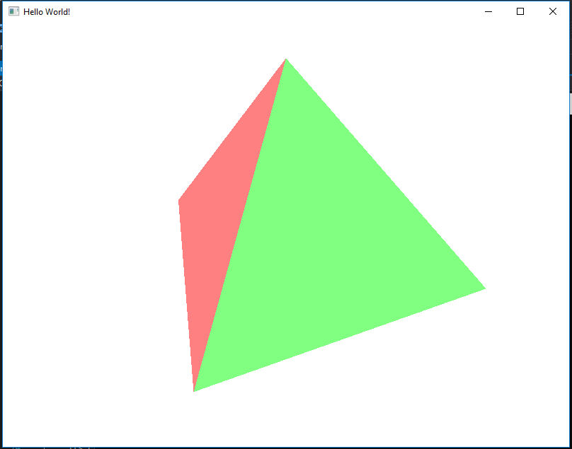
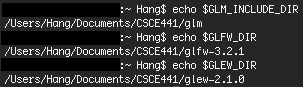

Setting up OpenGL tutorial
0. Before you start
- All the assignments are based on OpenGL with GLM/GLFW/GLEW. CMake is used for cross-platform compiling. Do not use system-specific libraries, such as windows.h.
- Check your system, compiler and IDE information first, then download the test code and read correspoding parts in this tutorial. This tutorial includes the following OSes:
- Windows and latest versions of Visual Studio(2015/2017) are recommended. All assignments will be graded in this environment.
- Click here to download the test code. This code is only used for testing. Start code will be provided for some assignments. Don't use this test code for assignments.
- Submission guide:
- Put all your source files (*.h, *hpp and *.cpp) in a ./src folder. Put all shader files (if required) in ./shaders.
- Only zip the ./src and ./shaders folders. DO NOT include CMakeLists.txt or the ./build folder.
- Thanks to Drs. Shinjiro Sueda and John Keyser who provided this tutorial.
- If you have any problems or find any mistakes in these instructions, feel free to come to the TA's office hours or email pedrofigueiredo@tamu.edu.
1. Windows
1.1. Download softwares and libraries
- CMake: Download binary distribution and extract it. (The CMake GUI is in ./bin/cmake-gui.exe)
- Visual Studio: Download and install Visual Studio 2017 Community.
- GLM: Download GLM and extract it to a proper folder.
- GLFW: Download GLFW and extract it to a proper folder.
- GLEW: Download GLEW windows binaries and extract it to a proper folder.
For example, we extract the three libraries:
- GLM to D:\CSCE441\glm
There should be some folders and files in it, such as .\cmake\, .\doc\, .\glm\, .\CMakeLists.txt, etc.
- GLFW to D:\CSCE441\glfw-3.2.1
There should be some folders and files in it, such as .\CMake\, .\deps\, .\docs\, .\CMakeLists.txt, etc.
- GLEW to D:\CSCE441\glew-2.1.0
There should be some folders and files in it, such as .\bin\, .\doc\, .\include\, .\LICENSE.txt, etc.


1.2. Setting up environment variables
- Right click "This PC" in any file explore window and select "Properties". Click "Advanced system settings" on the right side. Select "Advanced" and then click "Environment Variables...".

- Add 3 new user variables:
- variable: GLM_INCLUDE_DIR
Value: D:\CSCE441\glm
(or the postion where you extract GLM in last step)
- variable: GLFW_DIR
Value: D:\CSCE441\glfw-3.2.1
(or the postion where you extract GLFW in last step)
- variable: GLEW_DIR
Value: D:\CSCE441\glew-2.1.0
(or the postion where you extract GLEW in last step)
- To check that these are set correctly, you can run the Windows PowerShell program. If you type $env:GLM_INCLUDE_DIR, $env:GLFW_DIR, and $env:GLEW_DIR, the powershell should show the correct path.
- These steps are based on Win 10. Win 7 is almost the same.
Downloading, installation and setting up environment variables only needs to be done once and can be used forever(unless you remove the installations). All the following steps need to be done for each assignment.
1.3. Generate project with CMake
- Extract test code (or assignment start code) to a folder. After extraction, there should be a "CMakeLists.txt" file (and possibly src and shaders directories). Suppose it's D:\CSCE441\asignments\test_code in our example.
- Open CMake and fill the source code box with D:/CSCE441/asignments/test_code and fill the binarries box with D:/CSCE441/asignments/test_code/build (in other words, just add "build" on to the end)
- Click "Config" and select your IDE. After clicking "Finish", click "Generate".
- A vs project *.sln can be found in D:\CSCE441\asignments\test_code\build.
1.4. Compile the code
- Open the *.sln file with Visual Studio.
- In the solution explorer, there is an item with the project name (in the test code, it is OpenGL_Hello_World). Right click it and select "Set as StartUp Project".
- Edit, compile and run as normal Visual Studio project. You will see a rotating tetrahedron.

- Other IDEs should be similar.
2. MacOS
2.1. Download softwares and libraries
- CMake: Download and install binary distribution.
- Xcode: Download and install.
- GLM: Download GLM and extract it to a proper folder.
- GLFW: Download GLFW and extract it to a proper folder.
If you are using the latest macOS Sierra, you need to compile it on your macbook. Please download the source code(click "Clone on Github") instead.
- GLEW: Download GLEW source code and extract it to a proper folder.
For example, we extract
-
GLM to ~/Documents/CSCE441/glm
There should be some folders and files in it, such as ./cmake/, ./doc/, ./glm/, ./CMakeLists.txt, etc.
-
GLFW source code to ~/Documents/CSCE441/glfw-3.2.1 (If Sierra)
There should be some folders and files in it, such as ./CMake/, ./deps/, ./docs/, ./CMakeLists.txt, etc.
Complie GLFW on your mac
- cd to GLEW folder: cd ~/Documents/CSCE441/glfw-3.2.1
- Use CMake to build project: cmake .
- compile in the terminal: make -j4
After compiling:
-
GLFW binaries to ~/Documents/CSCE441/glfw-3.2.1 (If not Sierra)
There should be some folders and files in it, such as .\CMake\, .\deps\, .\docs\, .\CMakeLists.txt, etc.
-
GLEW to ~/Documents/CSCE441/glew-2.1.0
There should be some folders and files in it, such as .\bin\, .\doc\, .\include\, .\LICENSE.txt, etc.
Complie GLEW on your mac
- cd to GLEW folder: cd ~/Documents/CSCE441/glew-2.1.0
- compile in the terminal: make -j4
After compiling:
-
(You can put them anywhere you like.)
2.2. Setting up environment variables
- Edit ~/.bash_profile (or ~/.bashrc if .bash_profile doesn't exist), add the following 3 lines(or use the postion where you extract GLM/GLFW/GLEW in last step):
export GLM_INCLUDE_DIR=$HOME/Documents/CSCE441/glm
export GLFW_DIR=$HOME/Documents/CSCE441/glfw-3.2.1
export GLEW_DIR=$HOME/Documents/CSCE441/glew-2.0.0
The path is depend on the position where you extract GLM/GLFW/GLEW in last step.
- Use "source ~/.bash_profile" or "source ~/.bashrc" to make them take effect.
- In the terminal, try echo $GLM_INCLUDE_DIR, echo $GLFW_DIR and echo $GLEW_DIR, the terminal should show the correct path.

Downloading, installation and setting up environment variables only need to be done once and can be used forever(unless you remove them). All following steps need to be done for each assignments.
You can use either Xcode or terminal to build your code. If you use Xcode, please read 2.3.A and 2.4.A. Otherwise, read 2.3.B and 2.4.B.
2.3.A Generate project with CMake for Xcode
- Extract test code(or assignment start code) to a folder. After extraction, there shold be a "CMakeLists.txt" file. Suppose it's ~/Documents/CSCE441/asignments/test_code in our example.
- Open terminal and cd to this folder.
- Run following:
mkdir build
cd build
cmake -G Xcode ..
(If it shows CMAKE_C_COMPILER could be found, make sure g++ command works, then run sudo xcode-select --reset in terminal.)
- A Xcode project *.xcodeproj can be found in ~/Documents/CSCE441/assignments/test_code/build.
2.4.A Compile the code with Xcode
- Open the *.xcodeproj file with Xcode.
- In solution explorer, change the target by clicking on "ALL_BUILD" and selecting the item with project name(in the test code, it is OpenGL_Hello_World).
- Click "OpenGL_Hello_World" -> "Edit Scheme" -> "Run" -> "Option". Check option: "Use custom working directory" and set it to the build folder ~/Documents/CSCE441/asignments/test_code/build
- Edit, compile and run as normal Xcode project. You will see a rotating tetrahedron.
2.3.B Generate project with CMake for terminal
- Extract test code(or assignment start code) to a folder. After extraction, there shold be a "CMakeLists.txt" file. Suppose it's ~/Documents/CSCE441/asignments/test_code in our example.
- Open terminal and cd to this folder.
-
Run following:
mkdir build
cd build
cmake ..
(If it shows CMAKE_C_COMPILER could be found, make sure g++ command works, then run sudo xcode-select --reset in terminal.)
- A Makefile can be found in ~/Documents/CSCE441/assignments/test_code/build.
- If you add or remove source files, you need to delete build folder and re-cmake it.
2.4.B Compile the code with ternimal
-
Continue with last step(in build folder) and run in terminal:
make -j4
./OpenGL_Hello_World
- You will see a rotating tetrahedron.
3. Linux(Debian)
1.1. Download softwares and libraries
-
Download following libraries and softwares:
sudo apt-get update
sudo apt-get install g++
sudo apt-get install cmake
sudo apt-get install freeglut3-dev
sudo apt-get install libxrandr-dev
sudo apt-get install libxinerama-dev
sudo apt-get install libxcursor-dev
- GLM: Download GLM and extract it to a proper folder.
- GLFW: Download GLFW and extract it to a proper folder.
- GLEW: Download GLEW source code and extract it to a proper folder.
For example, we extract
-
GLM to ~/Documents/CSCE441/glm
There should be some folders and files in it, such as ./cmake/, ./doc/, ./glm/, ./CMakeLists.txt, etc.
-
GLFW binaries to ~/Documents/CSCE441/glfw-3.2.1
There should be some folders and files in it, such as ./CMake/, ./deps/, ./docs/, ./CMakeLists.txt, etc.
-
GLEW to ~/Documents/CSCE441/glew-2.1.0
There should be some folders and files in it, such as ./bin/, ./doc/, ./include/, ./LICENSE.txt, etc.
Complie GLEW on your mac
- cd to GLEW folder: cd ~/Documents/CSCE441/glew-2.1.0
- compile in the terminal: make -j4
After compiling:
-
(You can put them anywhere you like.)
3.2. Setting up environment variables
-
Edit ~/.profile, add the following 3 lines(or use the postion where you extract GLM/GLFW/GLEW in last step):
export GLM_INCLUDE_DIR=$HOME/Documents/CSCE441/glm
export GLFW_DIR=$HOME/Documents/CSCE441/glfw-3.2.1
export GLEW_DIR=$HOME/Documents/CSCE441/glew-2.0.0
The path is depend on the position where you extract GLM/GLFW/GLEW in last step.
- Use "source ~/.profile" to make them take effect.
- In the terminal, try echo $GLM_INCLUDE_DIR, echo $GLFW_DIR and echo $GLEW_DIR, the terminal should show the correct path.
Downloading, installation and setting up environment variables only need to be done once and can be used forever(unless you remove them). All following steps need to be done for each assignments.
3.3. Generate project with CMake for terminal
- Extract test code(or assignment start code) to a folder. After extraction, there shold be a "CMakeLists.txt" file. Suppose it's ~\Documents\CSCE441\asignments\test_code in our example.
- Open terminal and cd to this folder.
-
Run following:
mkdir build
cd build
cmake ..
- A Makefile can be found in ~/Documents/CSCE441/assignments/test_code/build.
- If you add or remove source files, you need to delete build folder and re-cmake it.
3.4. Compile the code with ternimal
-
Continue with last step(in build folder) and run in terminal:
make -j4
./OpenGL_Hello_World
- You will see a rotating tetrahedron.